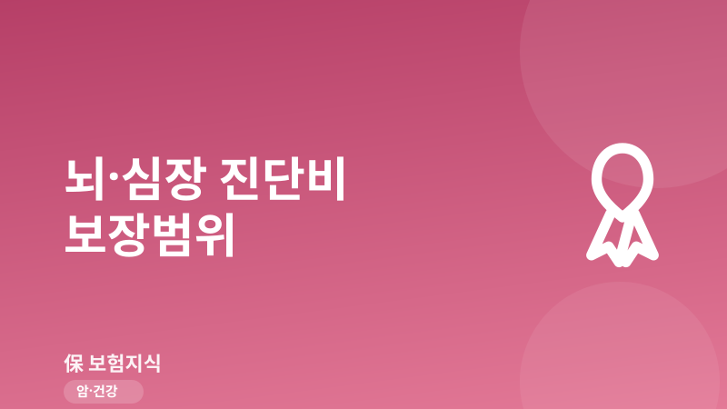
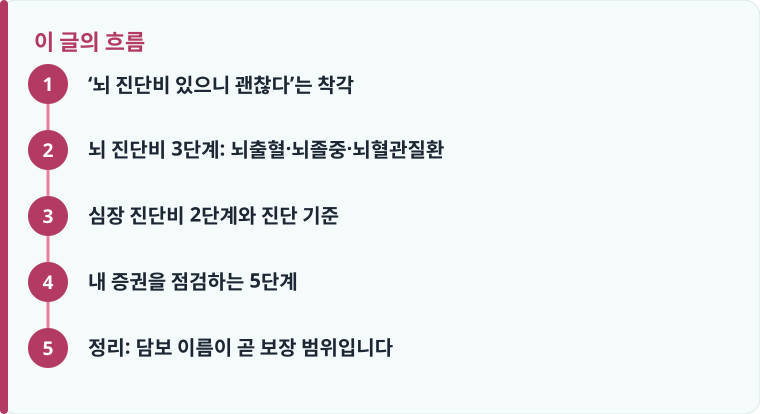

뇌 진단비는 보장 범위가 넓은 순서로 뇌혈관질환 > 뇌졸중 > 뇌출혈 3단계이며, 이름에 따라 보장하는 질병코드 자체가 다릅니다.
보장 여부는 진단서의 질병분류코드(KCD·I코드)로 갈립니다. 뇌출혈은 I60~I62, 뇌경색은 I63, 급성심근경색은 I21~I22입니다.
뇌출혈진단비만 있으면 발생 빈도가 높은 뇌경색이 빠지고, 급성심근경색진단비만 있으면 협심증이 빠집니다.
‘뇌 진단비 있으니 괜찮다’는 착각
건강보험을 정리하다 보면 “뇌 관련 진단비가 들어 있으니 뇌 질환은 다 보장된다”고 생각하기 쉽습니다. 그런데 실제 청구 단계에서 “가입하신 담보는 뇌출혈진단비여서, 이번 진단명(뇌경색)은 지급 대상이 아닙니다”라는 안내를 받는 경우가 적지 않습니다. 문제는 담보 이름이 비슷해서 소비자가 차이를 눈치채기 어렵다는 점입니다. 뇌출혈진단비·뇌졸중진단비·뇌혈관질환진단비는 글자만 조금 다를 뿐 보장하는 질병 범위가 완전히 다릅니다.
핵심은 이것입니다. 뇌·심장 진단비는 ‘뇌·심장에 무슨 일이 생겼는가’가 아니라 ‘진단서에 어떤 질병분류코드(KCD, 흔히 I코드)가 적히는가’로 지급 여부가 결정됩니다. 같은 반신마비 증상이라도 진단명이 뇌출혈이냐 뇌경색이냐에 따라, 그리고 내 증권의 담보가 어디까지를 포함하느냐에 따라 결과가 갈립니다. 그래서 지금 필요한 것은 새 상품 가입이 아니라, 내 증권에 적힌 담보명을 정확히 읽고 공백을 찾아내는 일입니다.
뇌 진단비 3단계: 뇌출혈·뇌졸중·뇌혈관질환
뇌 관련 진단비는 보장 범위가 넓은 순서로 뇌혈관질환 > 뇌졸중 > 뇌출혈, 세 단계로 나뉩니다. 가장 좁은 뇌출혈진단비는 뇌출혈(질병코드 I60~I62)만 보장합니다. 뇌출혈은 뇌졸중 중에서도 일부일 뿐인데, 실제 뇌졸중 발생의 다수는 혈관이 막히는 뇌경색입니다. 그래서 뇌출혈진단비만 가지고 있으면 정작 더 흔한 뇌경색이 통째로 빠지는, 보장 공백이 큰 구조가 됩니다.
가운데 단계인 뇌졸중진단비는 뇌출혈에 더해 뇌경색(I63)까지 포함합니다. 뇌경색이 뇌졸중 발생의 대부분을 차지하기 때문에, 실효성 면에서 뇌출혈진단비와는 비교가 안 될 만큼 넓습니다. 같은 보험료를 낸다면 뇌출혈진단비보다 뇌졸중진단비 쪽이 훨씬 많은 사례를 보장한다고 이해하면 됩니다.
가장 넓은 뇌혈관질환진단비는 뇌졸중(뇌출혈+뇌경색)에 더해 기타 뇌혈관질환까지 포함해 사실상 I60~I69 전체를 보장합니다. 뇌동맥의 협착이나 기타 뇌혈관질환처럼 뇌졸중 코드에 들어가지 않는 진단명까지 폭넓게 담기므로, 세 담보 중 보장 범위가 가장 큽니다. 진단명이 어떤 I코드로 확정되느냐가 곧 지급 여부라는 점은 진단코드와 보험금 청구의 관계를 함께 보면 더 분명해집니다.

심장 진단비 2단계와 진단 기준
심장 진단비도 같은 함정이 있습니다. 좁은 쪽인 급성심근경색진단비는 급성심근경색(I21~I22)만 보장하고 협심증은 제외됩니다. 넓은 쪽인 허혈성심장질환진단비는 협심증(I20)과 만성 허혈성심장질환 등 I20~I25 범위를 폭넓게 보장합니다. 가슴 통증으로 병원을 찾았는데 진단명이 협심증이라면, 급성심근경색진단비만 있는 경우 지급 대상이 아니게 됩니다.
왜 이렇게 갈리는지는 진단 기준을 보면 이해가 됩니다. 뇌출혈과 뇌경색은 CT·MRI 같은 뇌 영상과 임상 소견으로 확정합니다. 반면 급성심근경색은 전형적인 임상 증상에 더해 심전도 변화, 트로포닌 같은 심장효소 수치의 상승, 영상 소견 가운데 정해진 요건을 충족해야 진단으로 인정됩니다. 협심증은 혈류가 부족해 흉통이 있지만 심근이 실제로 괴사하는 급성심근경색의 진단기준까지는 충족하지 못하기 때문에, 급성심근경색진단비로는 지급되지 않는 것입니다.
정리하면, 가입 단계에서는 뇌출혈·급성심근경색처럼 좁은 담보보다 뇌혈관질환·허혈성심장질환처럼 넓은 담보를 우선하는 편이 유리합니다. 다만 넓은 담보는 보장 범위가 큰 만큼 보험료가 더 비쌀 수 있어, 보험료 여력과 함께 저울질해야 합니다. 갱신형이라면 나이가 들수록 보험료가 오르는 구조라는 점도 같이 봐야 하는데, 이 부분은 갱신형 보험료 인상 편에서 자세히 다룹니다.
작성·검수 기준
이 글은 특정 보험사 상품을 권유하기 위한 것이 아니라, 뇌·심장 진단비 담보의 보장 범위 차이를 일반적으로 알려진 질병분류(KCD·I코드) 기준에서 설명하기 위해 작성했습니다. 담보명이 같아도 보장하는 코드 범위, 면책·감액 조건, 진단 인정 기준은 가입 시점의 약관과 개별 상품, 최근 개정 내용에 따라 달라질 수 있습니다.
정확한 보장 범위는 본인 증권의 약관과 상품설명서에서 담보명과 대상 질병코드를 직접 확인하는 것이 가장 안전하며, 진단코드가 청구 결과를 어떻게 가르는지는 진단코드와 보험금 청구를 함께 참고하세요.
내 증권을 점검하는 5단계
지금 든 뇌·심장 진단비가 어디까지 보장하는지 확인하는 순서는 다음과 같습니다. 담보 이름과 대상 질병코드, 그리고 초기 조건을 차례로 짚으면 공백을 빠르게 찾을 수 있습니다.
- 증권·가입증명서에서 담보명이 ‘뇌출혈’인지 ‘뇌졸중’인지 ‘뇌혈관질환’인지 정확히 읽습니다. 심장은 ‘급성심근경색’인지 ‘허혈성심장질환’인지 구분합니다.
- 약관의 담보별 대상 질병코드를 확인합니다. 뇌출혈 I60~I62, 뇌경색 I63, 뇌혈관질환 I60~I69, 급성심근경색 I21~I22, 허혈성심장질환 I20~I25가 기준점입니다.
- 뇌경색(I63)과 협심증(I20)이 내 담보에 포함되는지 별도로 체크합니다. 빠져 있다면 가장 흔한 공백일 가능성이 큽니다.
- 가입 초기 면책기간과 감액 조건(예: 가입 후 1~2년 이내 진단 시 50% 감액지급)이 있는지, 갱신형이라 보험료가 오르는 구조인지 확인합니다.
- 공백이 크면 넓은 담보(뇌혈관질환·허혈성심장질환)로 보완할지 검토하되, 늘어나는 보험료와 우선순위를 함께 따져 결정합니다.
진단비는 실제 쓴 치료비를 보상하는 실손과 달리 정액으로 지급되므로, 실손과 별개로 중복해서 받을 수 있습니다. 즉 실손이 있어도 진단비 공백은 따로 메워야 하는 영역입니다. 진단·재진단 시점의 목돈 설계가 궁금하다면 암 진단비 설정 기준과 재진단·전이암 보장 편의 접근 방식을 뇌·심장 담보에도 그대로 적용해 볼 수 있습니다.
정리: 담보 이름이 곧 보장 범위입니다
뇌·심장 진단비는 ‘있느냐 없느냐’보다 ‘어느 범위의 담보냐’가 결과를 가릅니다. 뇌는 뇌혈관질환 > 뇌졸중 > 뇌출혈, 심장은 허혈성심장질환 > 급성심근경색 순으로 넓어지며, 지급 여부는 진단서의 I코드로 결정됩니다. 오늘 증권을 꺼내 담보명과 뇌경색(I63)·협심증(I20) 포함 여부, 그리고 면책·감액 조건만 확인해도 자신의 보장 공백을 스스로 판단할 수 있습니다.
다른 보험 정보 글이 궁금하다면 보험지식 블로그에서 이어 읽어 보세요. 가입 전에는 반드시 약관과 상품설명서를 확인하는 것이 가장 안전한 방법입니다.